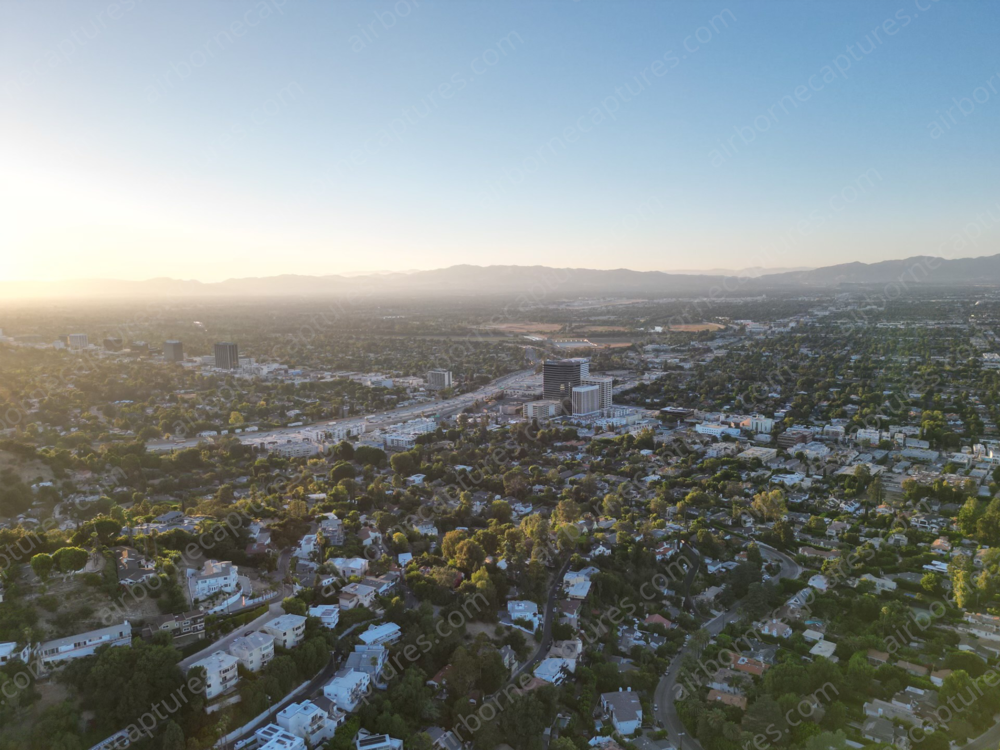
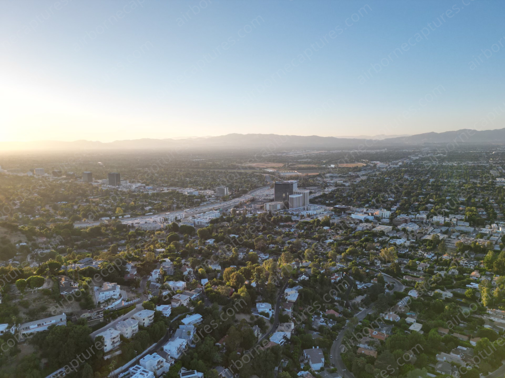

Your World From Above

 

About Me and My Services
Welcome to my page! I'm Ryan Stein, a freelance videographer with a passion that took flight through the art of drone videography and photography. My journey began with capturing the world from new heights, and now I bring that unique perspective to a variety of normal and aerial services, specializing in:
Commercials Sports Events (Bar-Mitzvahs, Weddings, etc.) Montages and Other Video for Events Social Media Posts Short Films Drone Inspection Music/Score Composition
Ready to elevate your project? Click on the "Hire Us" tab and let's turn your ideas into a visual reality.